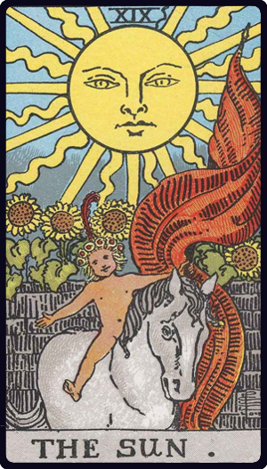
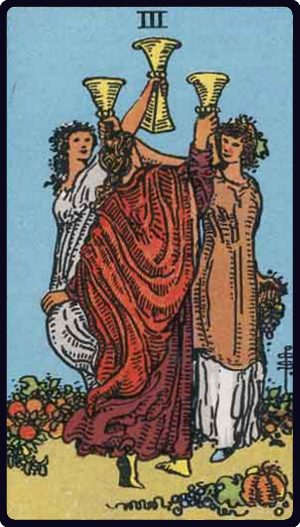
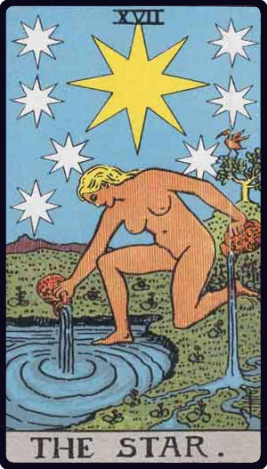
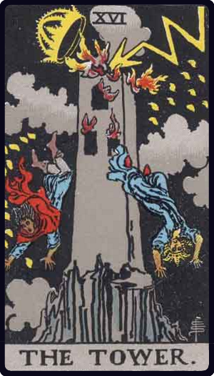
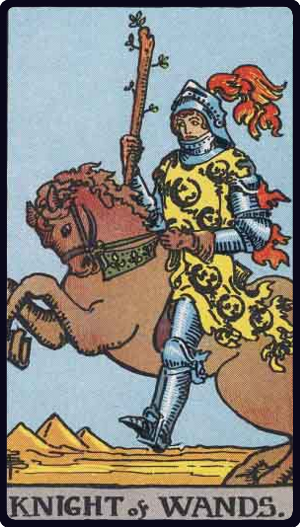
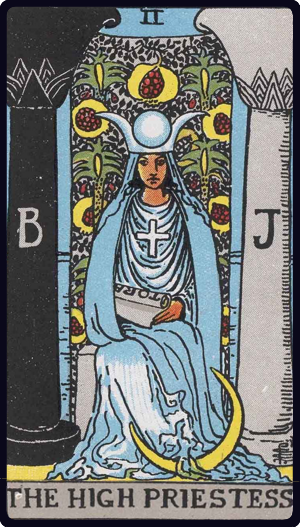
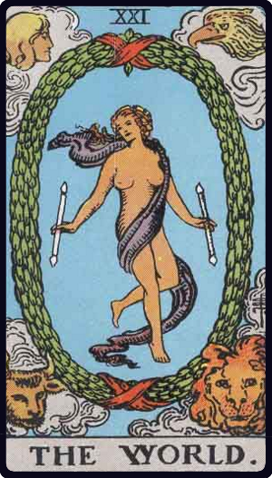
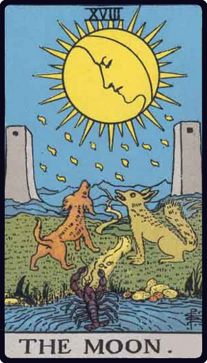
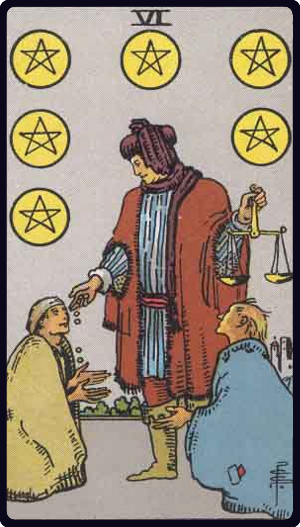
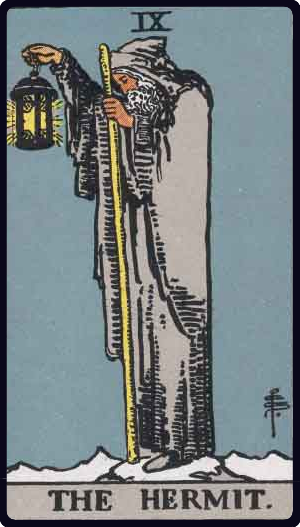

☾ TAROT READING 잉크의위로 지우 님을 위한 리딩 타로 + 별자리 + 사주인간관계/갈등2026. 11. 18. | 지우 님, 오래 혼자 품고 있던 이야기를 꺼내주셔서 고맙습니다.
가까운 사람과의 관계가 어긋날 때, 우리는 상대보다 먼저 자신을 의심하게 되지요. 내가 너무 예민했던 걸까, 내가 먼저 다가갔어야 했을까. 적어주신 문장들 사이사이에서 그런 질문이 오래 맴돌았던 흔적이 보였어요. 오늘 펼친 열 장의 카드는 그 의심 아래에 무엇이 있는지, 그리고 지우 님이 어디로 걸어갈 수 있는지를 차분히 보여주고 있어요. 천천히, 편한 속도로 읽어주세요. | 카드를 펼친 자리 켈틱 크로스 · 10장 | |  5 태양 | |  4 컵 3 |  1 별 |  2 탑 역방향 |
|  6 완드 나이트 역방향 | |  3 여사제 | |
|  10 세계 |  9 달 역방향 |  8 펜타클 6 |  7 은둔자 |
|
|
| | 1 | 지금 이 자리 별 | | 2 | 가로막거나 밀어주는 것 탑 역방향 | | 3 | 보이지 않는 뿌리 여사제 | | 4 | 지나온 발자국 컵 3 | | 5 | 손 닿을 듯한 가능성 태양 | | 6 | 곧 문을 두드릴 것 완드 나이트 역방향 | | 7 | 지금 당신이 서 있는 방식 은둔자 | | 8 | 당신을 둘러싼 공기 펜타클 6 | | 9 | 바라면서도 두려운 것 달 역방향 | | 10 | 결국 닿게 될 곳 세계 |
| 카드가 들려주는 이야기 | CHAPTER 1 · 카드 1 · 2 · 3 지금 이 자리, 꺼지지 않은 별빛 첫 번째 자리, '지금 이 자리'에 놓인 카드는 별이에요. 별 카드 속 인물은 무너진 탑을 지나온 뒤 물가에 무릎을 꿇고 앉아, 한 손으로는 땅에, 다른 손으로는 물에 물을 붓고 있어요. 모든 것이 흔들린 다음에야 찾아오는 고요함, 그리고 그 고요함 속에서 조금씩 되살아나는 회복의 힘을 상징하는 카드예요. 지우 님이 지금 서 있는 자리가 바로 그렇습니다. 적어주신 고민만 보면 관계가 무너지고 있는 한가운데에 있는 것처럼 느껴지지만, 카드는 지우 님이 이미 가장 아픈 순간을 한 번 지나왔다고 말해요. 그 시간 동안 혼자 감정을 정리하고, 아무렇지 않은 척 일상을 버텨온 힘이 지금 지우 님 안에 남아 있어요. 그 힘은 생각보다 크고, 쉽게 꺼지지 않아요. 그 위를 가로지르는 두 번째 카드, '가로막거나 밀어주는 것' 자리에는 탑이 거꾸로 놓였어요. 정방향의 탑이 갑작스러운 붕괴를 뜻한다면, 역방향의 탑은 무너질까 두려워 필사적으로 붙잡고 있는 오래된 구조를 뜻해요. 관계를 지키기 위해 지우 님이 해온 노력들, 먼저 연락하고, 서운한 마음을 삼키고, 분위기를 맞춰온 시간들이 떠오르실 거예요. 그 노력은 분명 진심이었지만, 카드는 그 방식이 이제 지우 님을 지치게 만들고 있다고 조심스럽게 짚어요. 무너지지 않게 붙잡는 손에 힘이 들어갈수록, 정작 지우 님의 마음은 더 좁은 곳에 갇히게 됩니다. 그리고 십자의 아래, '보이지 않는 뿌리' 자리에는 여사제가 앉아 있어요. 여사제는 말하지 않아도 이미 알고 있는 마음, 머리보다 먼저 움직이는 직감을 뜻해요. 지우 님은 사실 이 관계에서 무엇이 어긋났는지, 그리고 자신이 무엇을 원하는지 이미 어렴풋이 알고 계세요. 다만 그 답을 인정하는 순간 무언가를 잃게 될까 봐, 아직 말로 꺼내지 않았을 뿐이지요. 세 장을 함께 보면 이야기는 이렇게 이어집니다. 지우 님에게는 이미 회복할 힘이 있고(별), 지금 그 힘을 막고 있는 것은 상대가 아니라 무너지지 않으려 붙잡고 있는 오래된 방식이며(역방향 탑), 그 방식을 내려놓아도 괜찮다는 답은 이미 지우 님 안에 있습니다(여사제). 이번 리딩 전체는 이 세 장에서 시작해요. |
| CHAPTER 2 · 카드 4 · 5 · 6 지나온 길과 곧 다가올 문 '지나온 발자국' 자리의 컵 3은 함께 웃고 축하하던 시절의 기억이에요. 그 따뜻함이 진짜였기에 지금의 거리감이 더 아프게 느껴지는 것이겠지요. 카드는 그 시절을 부정하지 말라고 말해요. 좋았던 기억은 지금의 서운함을 증명하는 것이 아니라, 이 관계가 다시 따뜻해질 수 있는 바탕이 되어줄 수 있어요. 위쪽, '손 닿을 듯한 가능성'에는 태양이 떠 있어요. 숨기지 않고 솔직해질 때 관계가 오히려 밝아질 수 있다는 신호예요. ⋯ 예시라서 여기까지만 보여드려요
실제 리포트에서는 이 부분이 1,000자 이상 이어져요 |
| CHAPTER 3 · 카드 7 · 8 · 9 당신이 서 있는 방식과 둘러싼 공기 은둔자는 지우 님이 요즘 사람들 사이에서 한 발 물러서 있다는 것을 보여줘요. 그 물러섬은 도망이 아니라, 나를 지키기 위해 필요했던 시간이었을 거예요. 등불을 든 은둔자처럼, 지우 님은 지금 혼자만의 시간 속에서 스스로에게 정말 필요한 것이 무엇인지 비춰보고 있어요. ⋯ 예시라서 여기까지만 보여드려요
실제 리포트에서는 이 부분이 1,200자 이상 이어져요 |
| CHAPTER 4 · 카드 10 · 종합 결국 닿게 될 곳, 하나의 원 마지막 자리의 세계 카드는 한 시기가 온전히 마무리되고 새로운 원이 시작됨을 뜻해요. 이 관계가 어떤 모양으로 이어지든, 지우 님은 이 시간을 지나며 더 단단하고 자유로운 사람이 되어 있을 거예요. ⋯ 예시라서 여기까지만 보여드려요
실제 리포트에서는 이 부분이 1,200자 이상 이어져요 |
| ASTROLOGY · 별자리 왜 같은 자리에서 마음이 다칠까 태양이 황소자리에 있는 지우 님은 한 번 마음을 준 사람을 오래, 꾸준히 지키는 분이에요. 쉽게 변하지 않는 마음은 지우 님의 가장 큰 장점이지만, 관계가 흔들릴 때는 그 마음을 놓지 못해 더 오래 아파하게 만들기도 해요. ⋯ 예시라서 여기까지만 보여드려요
실제 리포트에서는 이 부분이 2,000자 이상 이어져요 |
| SAJU · 사주 사주가 보여주는 반복된 패턴 일간 갑목은 곧게 자라는 큰 나무처럼 원칙과 책임감이 강한 기운이에요. 월지의 화 기운이 이 나무를 밝게 드러내 주지만, 동시에 스스로를 태워가며 주변을 비추는 경향도 함께 보입니다. ⋯ 예시라서 여기까지만 보여드려요
실제 리포트에서는 이 부분이 3,500자 이상 이어져요 |
| FOR YOU · 지금 당신에게 필요한 것 이번 주에 한 번, 상대에게 하고 싶었던 말을 종이에 먼저 적어보세요. 바로 전하지 않아도 괜찮아요. 적어 내려가다 보면 진짜 하고 싶은 말과, 상처받지 않으려고 덧붙인 말이 조금씩 구분되기 시작할 거예요. |
| ✦ 오늘 펼친 카드가 지우 님 앞에 놓인 길을 비추는 작은 등불이 되기를 바랍니다.
무너지지 않으려 애쓴 시간도, 이제 내려놓으려는 마음도 모두 지우 님의 것이에요. 언제든 다시 이야기를 들려주세요. — 잉크의위로 | 이 리포트는 잉크의위로가 설계한 해석 기준에 따라 AI(Anthropic Claude)를 활용해 작성되었습니다.
본 리딩은 자기 성찰과 영적 탐구를 위한 목적으로 제공됩니다.
카드 이미지가 보이지 않으면 메일 상단의 '이미지 표시'를 눌러주세요.
문의: ssstorystorageee@gmail.com |
|